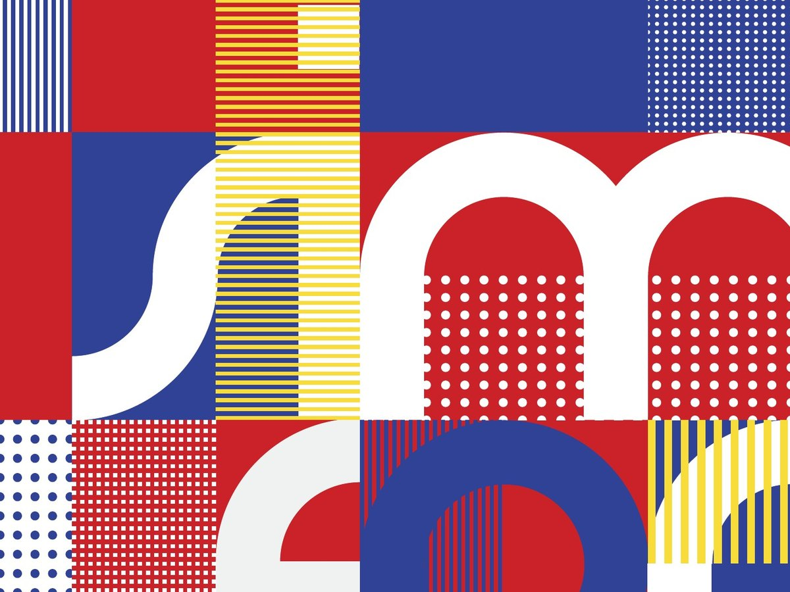
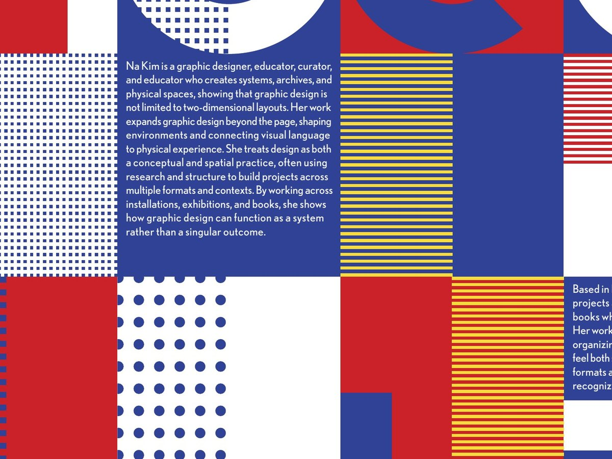

Type
Geometric sans-serifs
Structural, geometric letterforms that feel built rather than drawn.
Details
Course: Sophomore C Studio, Carnegie Mellon School of Design
Timeline: Spring 2026
Role: Designer (individual project)
Deliverables: Poster, booklet, motion piece
Tools: Illustrator, InDesign, After Effects
Summary
Design Hero is a three-part project about a designer who inspires me: Na Kim, a graphic designer, artist, curator and educator based in Berlin and active in Seoul. Across a typographic poster, a 16-page booklet and a type-based motion piece, I built one visual system from her work to introduce her to people who have never heard of her.

Overview
Who is Na Kim?
Na Kim doesn’t stay in one format. She translates her work across books, exhibitions, installations and spaces, and treats collecting, arranging and building rules as a creative process rather than simple documentation. Her work often captures moments and memories from her everyday life.
She’s my design hero because her visual style has stayed recognizable across many years and many forms, which is something I want to build as a designer. Her work looks very structured at first glance, but it’s also personal.
Research
I made mood boards of her work and sorted them by category: print and publication, installation, space, product and exhibition design. Looking closely, I found a consistent language that guided all three pieces.
Type
Structural, geometric letterforms that feel built rather than drawn.
Color
Saturated red, blue and yellow, and high-contrast black and white.
Shape
Squares, circles, triangles, stars and diamonds, arranged in grids.
01 Poster
Typographic poster · 17.5 × 28 in
A typographic poster set in a lowercase typeface I made from circles and rectangles. The letters sit on a 5 × 8 grid of 3.5-inch squares and spell out “simple form, complex idea,” one of Na Kim’s ideas.
Dots, lines and dashes fill the empty squares, and bolder patterns sit behind the letters to keep the text readable. The “K” in her name has a straight leg that looks like a Korean character.



02 Booklet
16-page booklet · 8.25 × 10.5 in
A 16-page booklet about Na Kim’s work. It starts with an introduction and timeline, then covers her print, space and product work, LOOM (her home, gallery and studio in Berlin) and her exhibitions.
The spreads use a three-column grid, Futura and Instrument Serif, one main color each and numbered captions. Her work is shown unaltered. The covers use the poster’s square and quarter-circle shapes, with her objects in black and white.
Cover

03 Motion
Type-based video · 1:12
A 1:12 video based on Na Kim’s words about collecting, translated from a Korean interview into an English voiceover. The text on screen matches the voiceover.
The text is animated with the footage. A camera frame appears on “again and again,” her space at LOOM breaks into simple shapes, and the shapes fill a grid before fading into footage of her exhibition.
Reflection
What I learned
Poster
My first sketches were illustrations with type added. Building letters from simple shapes taught me to design with type first, and that constraints make a system stronger.
Booklet
Spreads that each tried to stand out felt like a magazine. Consistent grids, type and pacing let the work lead, and showed me how a reader moves through a sequence.
Motion
Cutting scenes that interrupted the rhythm, like page turns and a dramatic reveal, made the video stronger. Voice, pacing and motion have to work as one system.